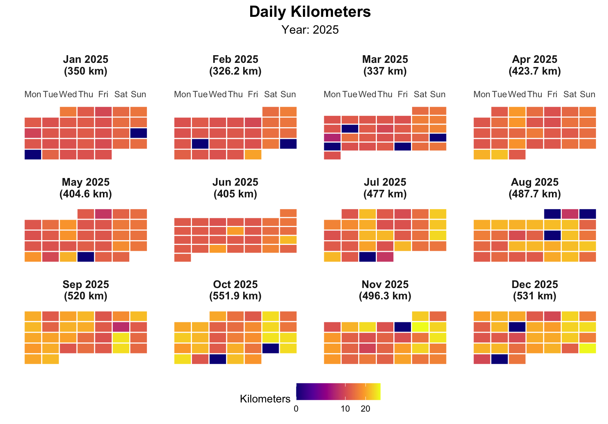

![]()
The loneliness of the long distance runner
I’m not much of a Strava person, and I’ve never been keen on the apps that upload your training to a social network to share with other runners. Still, I like to keep track of my daily workouts, and I do it the old-fashioned way: a plain Excel file (running.xlsx) with one row per day and a column for the kilometers logged.
If you’re also into data visualization and work with it professionally, though, a plain spreadsheet is never quite enough — you end up wanting to see the training rather than just log it. A calendar heatmap turns out to be a simple but visually powerful way to look at training volume week by week, month by month, across the whole year: darker tiles mean longer runs, lighter tiles mean rest or short recovery days, and the empty gaps are immediately obvious in a way that a spreadsheet row never quite shows.
Building the heatmap
The script below (training.R) reads the 2025 sheet from running.xlsx, cleans up the dates and distances, and then lays each day out on a small monthly calendar grid faceted by month. Let’s walk through it piece by piece.
1. Load the libraries and read the log. Nothing fancy here — readxl pulls the spreadsheet in, dplyr and lubridate do the date wrangling, and ggplot2 draws the thing.
training.R
library(ggplot2)
library(dplyr)
library(lubridate)
library(scales)
library(readxl) # For reading Excel files
# Read the Excel file
kms <- read_excel("blog/2026/09/running.xlsx", sheet = "2025")2. Clean the data and print a quick summary. Dates get coerced properly, rows with missing values are dropped, and distances are forced to numeric. Nothing here should ever trigger, but a training log accumulated by hand over a year will eventually have a typo’d cell.
training.R
kms <- kms %>%
mutate(date = as.Date(date)) %>%
filter(!is.na(date), !is.na(kms)) %>%
mutate(kms = as.numeric(kms)) %>%
filter(kms >= 0)
cat("Data Summary:\n")
cat("Date range:", as.character(min(kms$date)), "to", as.character(max(kms$date)), "\n")
cat("Total days:", nrow(kms), "\n")
cat("Total kilometers:", sum(kms$kms, na.rm = TRUE), "km\n")
cat("Average daily kilometers:", round(mean(kms$kms, na.rm = TRUE), 2), "km\n")3. Work out where each day sits on its monthly calendar grid. ggplot2 has no built-in calendar geometry, so this is the part that actually earns its keep: for every date we compute its weekday (Monday-first) and its week_of_month, correcting for the fact that the 1st of the month rarely falls on a Monday. Each day also gets tagged with that month’s running total, which ends up in the facet label.
training.R
create_kms_calendar_heatmap <- function(data, title = "Daily Kilometers Calendar Heatmap") {
calendar_data_prep <- data %>%
rename(value = kms)
monthly_totals <- calendar_data_prep %>%
mutate(year = year(date), month = month(date)) %>%
group_by(year, month) %>%
summarise(total_kms = sum(value, na.rm = TRUE), .groups = 'drop')
calendar_data <- calendar_data_prep %>%
mutate(
year = year(date),
month = month(date),
day = day(date),
weekday = wday(date, week_start = 1), # Monday = 1
month_name = month(date, label = TRUE, abbr = TRUE)
) %>%
group_by(year, month) %>%
mutate(
first_day_of_month = floor_date(date, "month"),
first_weekday = wday(first_day_of_month, week_start = 1),
# Offset by how far into the week the 1st of the month falls
week_of_month = ceiling((day + first_weekday - 1) / 7)
) %>%
ungroup() %>%
left_join(monthly_totals, by = c("year", "month")) %>%
mutate(
month_year_label = paste0(month_name, " ", year, "\n(", round(total_kms, 1), " km)"),
month_year_date = as.Date(paste(year, month, "01", sep = "-"))
) %>%
arrange(month_year_date)
month_order <- calendar_data %>%
select(month_year_label, month_year_date) %>%
distinct() %>%
arrange(month_year_date) %>%
pull(month_year_label)
calendar_data$month_year_label <- factor(calendar_data$month_year_label, levels = month_order)
calendar_data
}4. Draw the tiles. With the calendar grid in place, the plot itself is a straightforward geom_tile() faceted by month, colored on a diverging scale centered on the median distance — so an easy 5K and a 25K long run stand out on opposite ends, and typical training days fade into the gray middle.
training.R
plot_kms_calendar <- function(calendar_data, title = "Daily Kilometers Calendar Heatmap") {
ggplot(calendar_data, aes(x = weekday, y = -week_of_month, fill = value)) +
geom_tile(color = "white", linewidth = 0.5) +
facet_wrap(~ month_year_label, ncol = 4, scales = "free_y") +
scale_x_continuous(
breaks = 1:7,
labels = c("Mon", "Tue", "Wed", "Thu", "Fri", "Sat", "Sun"),
position = "top"
) +
scale_y_continuous(breaks = NULL) +
scale_fill_gradient2(
low = "lightgray", mid = "yellow", high = "darkred",
midpoint = median(calendar_data$value, na.rm = TRUE),
name = "Kilometers"
) +
labs(title = title, x = "", y = "") +
theme_minimal() +
theme(
axis.text.y = element_blank(),
axis.text.x.bottom = element_blank(),
axis.ticks = element_blank(),
panel.grid = element_blank(),
strip.background = element_blank(),
legend.position = "bottom"
)
}
kms_calendar_plot <- plot_kms_calendar(create_kms_calendar_heatmap(kms))
print(kms_calendar_plot)5. A colorblind-friendly variant, and the monthly numbers behind the chart. Swapping in the viridis “plasma” scale is a one-liner. And since the heatmap is meant to replace staring at a spreadsheet, it’s only fair to also print the spreadsheet-style summary it’s replacing.
training.R
kms_calendar_viridis <- plot_kms_calendar(create_kms_calendar_heatmap(kms), "Daily Kilometers") +
scale_fill_viridis_c(name = "Kilometers", option = "plasma", trans = "sqrt")
print(kms_calendar_viridis)
monthly_stats <- kms %>%
mutate(year_month = floor_date(date, "month")) %>%
group_by(year_month) %>%
summarise(
total_kms = sum(kms, na.rm = TRUE),
avg_daily_kms = mean(kms, na.rm = TRUE),
max_daily_kms = max(kms, na.rm = TRUE),
days_with_data = n(),
.groups = 'drop'
)
print(monthly_stats)And here’s the result for 2025:

The gaps are the honest part of the chart — the weeks I meant to run and didn’t are just as visible as the weeks I did. All told, 2025 added up to 5,310 km — enough to have jogged from Córdoba to Ulaanbaatar, if I’d only picked a less roundabout route than “out my front door and back.”